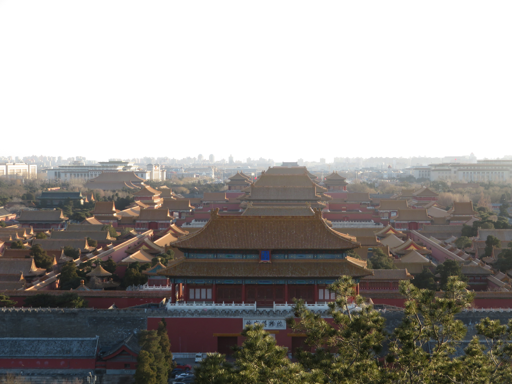
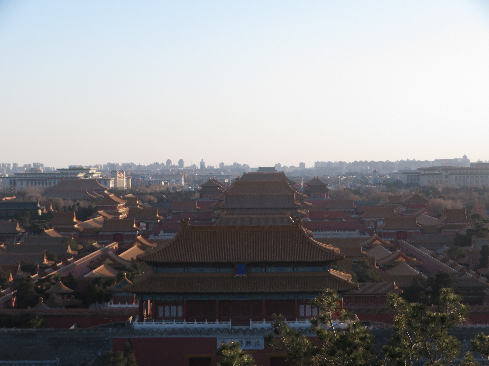
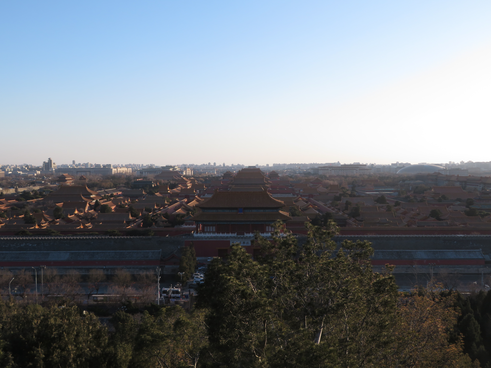
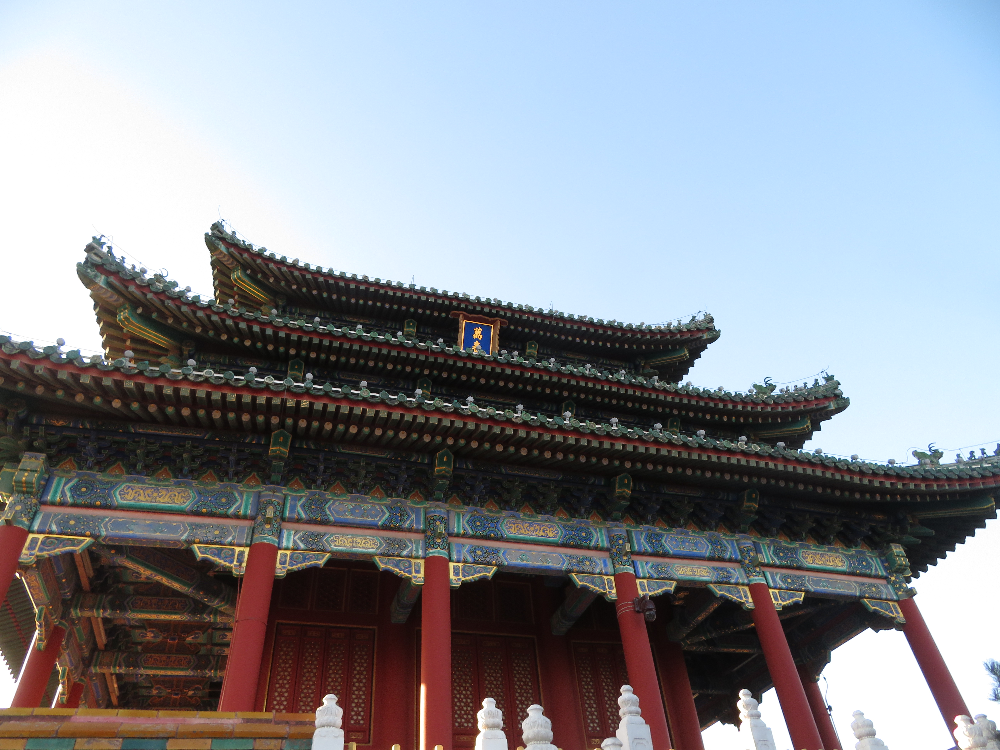
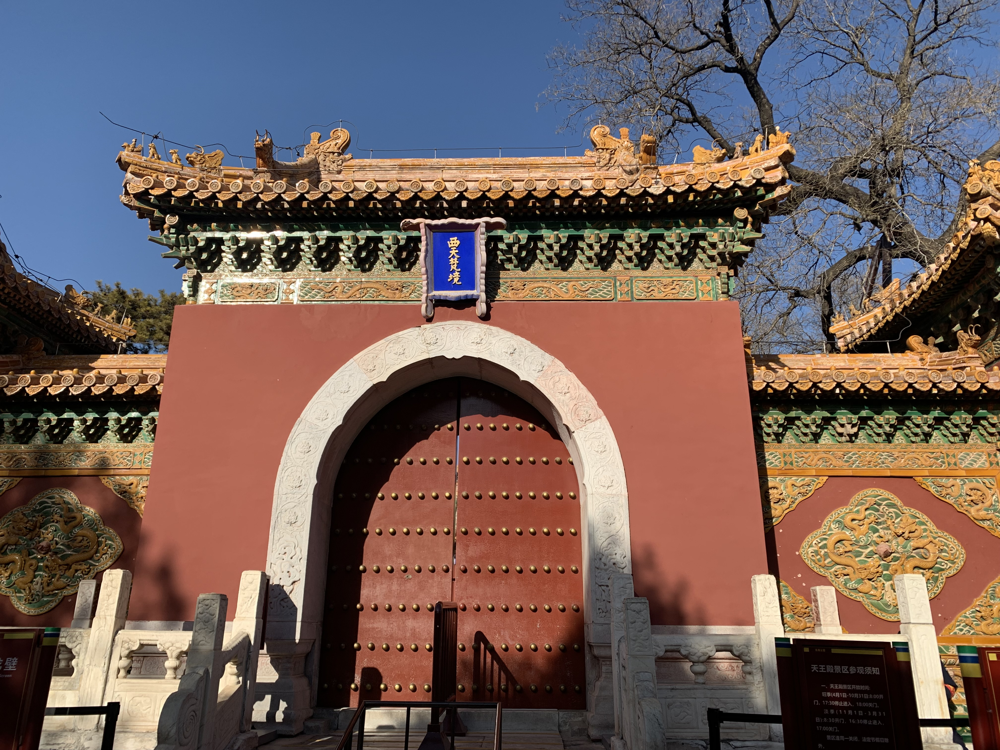
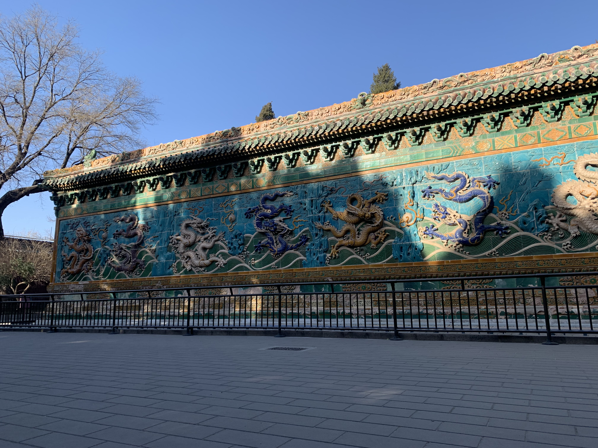
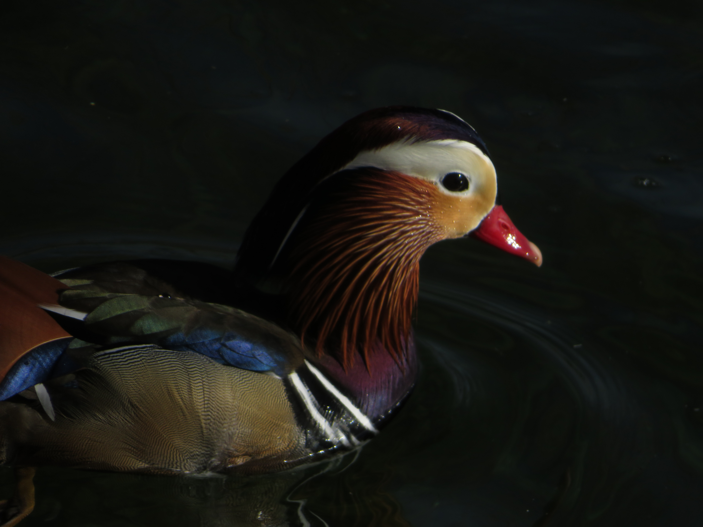
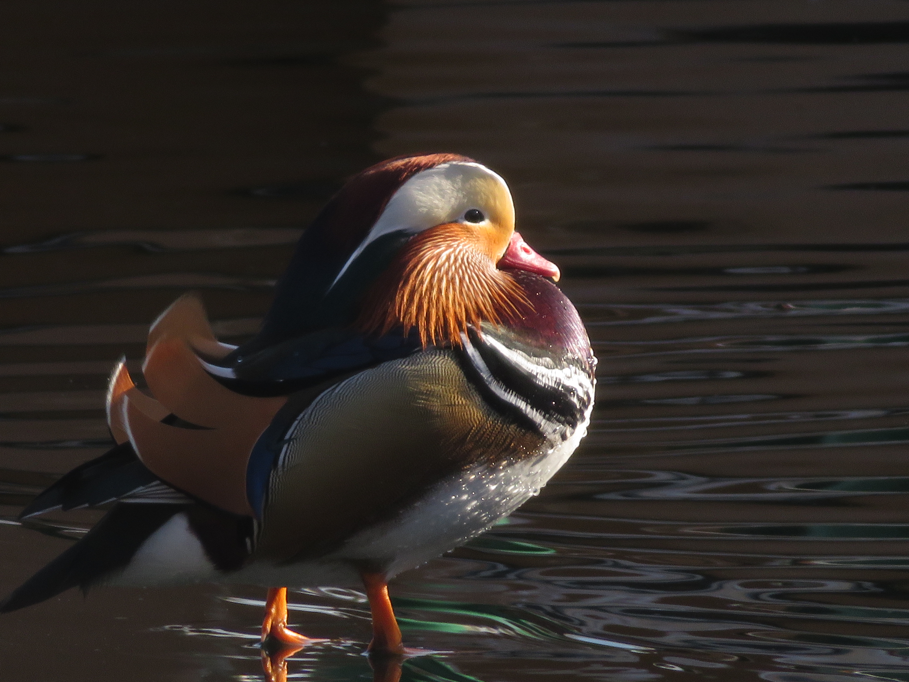
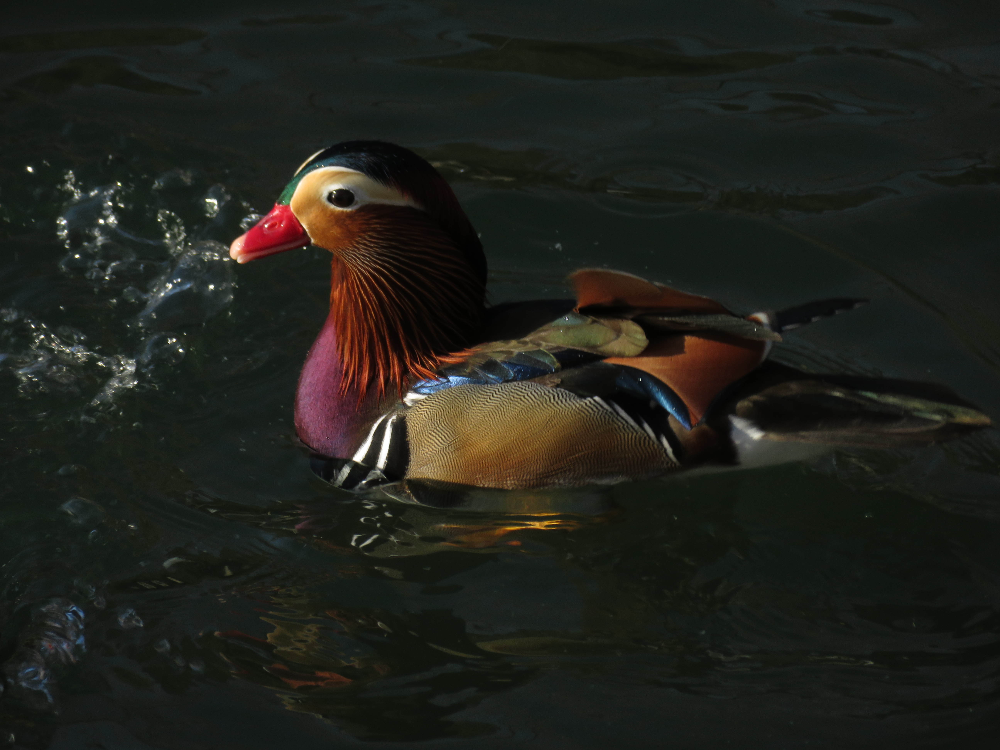

Jingshan Park

Mandarin Duck, Beihai Park
Located in the heart of China's capital of Beijing, Jingshan and Beihai parks are historic and scenic gems, perfect for appreciating the gorgeous views and relics of Ancient China.
Jingshan Park
Mandarin Duck, Beihai Park
Jingshan Park is probably one of my favorite scenic spots in Beijing, yielding gorgeous views of the huge Forbidden City, the home of the Chinese emperors centuries ago. Now, the mountain is accessible by a short climb up, which is certainly worth it due to the scenery at the top.

Forbidden City

Forbidden City

Forbidden City

Wanchunting

Jiaolou

Shouhuangdian
Beihai Park is also one of my favorite spots in this bustling city, containing several ancient sites like the Nine-Dragon Wall and lots of temples, not to mention the gorgeous lakeside scenery. The park is also home to tons of beautiful Mandarin Ducks in the winter, one most beautiful bird species in the entire world.

Temples

Nine-Dragon Wall
Beihai Lake

Mandarin Duck

Mandarin Duck

Mandarin Duck

Mandarin Duck

Mandarin Duck

Mandarin Duck